Beer Game
The beer game is a widely used in-class game that is played in supply chain management classes to demonstrate a phenomenon known as the bullwhip effect. Also, from the theoretical It consists of a serial supply chain network with four agents---a retailer, a warehouse, a distributor, and a manufacturer.
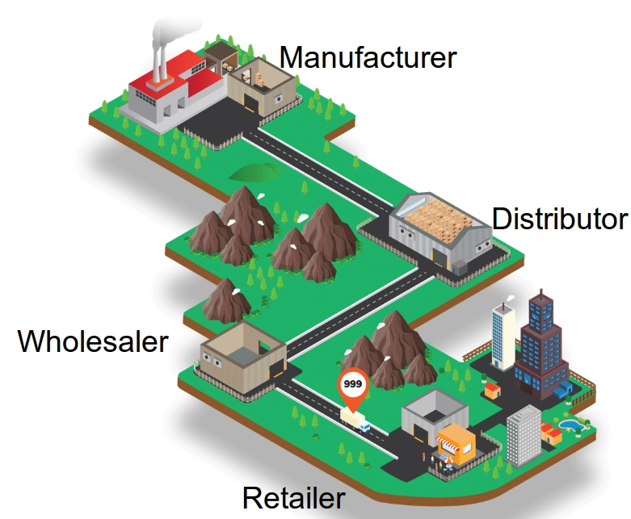
Customers with stochastic demand come to the retailer, and we assume they wait if the retailer does not have enough inventory; however, the retailer gets the penalty of shortage cost. Same thing happens in other nodes, except the manufacturer node which has an unlimited source of supply.
There are deterministic transportation and information lead times, though the total lead time is stochastic due to stockouts in upstream nodes. Each agent may have nonzero shortage and holding costs. When the game starts agents does not know when the game will finish and in each period they just select an order quantity and submit to their predecessor (supplier). The aim is minimizing long-run cost of the network given the assumption that each agent access only its own local information.
On the other hand, the game is a multi-agent cooperative decentralized partially observed Markov decision process, which are in NEXP complete of problems. So, we cannot solve them in reasonable amount of time. Here, a learning algorithm which provides close to optimal solution algorithm, is provided.
Build the learning model
An adjusted Deep Q-Network (DQN) model is used to solve to this problem. DQN is used to solve single agent games and extended to two agents zero-sum games. However, beer game is a cooperative non-zero-sum game. Using DQN directly results in a game that each agent minimizes its own cost not the whole cost of system. Thus, we cannot use it directly to solve the problem. We propose a feedback scheme to fix this issue and it enforces the agents to learn to minimize the whole cost of system. In this order we update the observed reward of each agent i and period t using:

in which we indeed penalize the agent with the summation of cost of other agents. Therefore, agents learn to minimize the total cost of system instead of just their own costs.
What does it Learn?
We present the results from a straightforward version of the game in which the DQN plays the role of the wholesaler and the other three players each follow a base-stock policy. (A base-stock policy means we always order to bring the inventory position—on-hand inventory minus backorders plus on-order inventory—equal to a fixed value, called the base-stock level. A base-stock policy is known to be optimal for the beer game, assuming all four players use it.) Each stage has a holding cost of 2 per item per period. The retailer has a shortage cost of 2 per item per period and the other stages do not have a shortage cost. The customer demand is either 0, 1, or 2 in each time period. (If these numbers seem small to you, think of them as cases or truckloads.) And, here is the way that the wholesaler learns:
Before the algorithm is trained, the wholesaler plays pretty badly. It stocks way too much inventory, as you can see in the figure below, and causes stockouts at the upstream stages. (Positive inventory is shown as brown boxes and positive numbers. Backorders are shown as red boxes and negative numbers.)
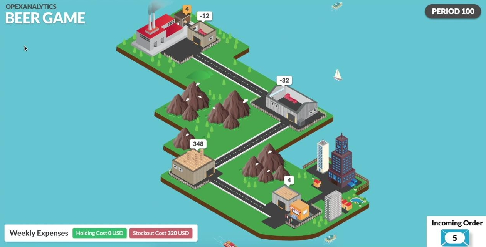
After 1000 of training episodes, it has learned that there is positive holding cost and it is better to keep its inventory level smaller.
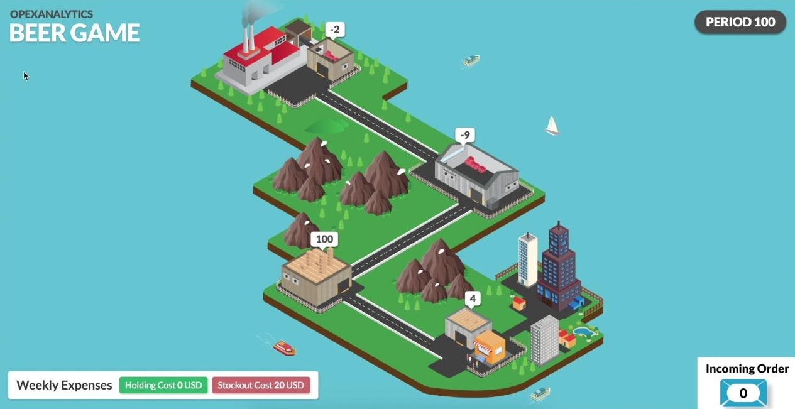
After 2000 of training episodes, it has learned that there is no stock-out cost and it is better to keep the inventory its level negative. Also, as you see the whole network is more stable and the inventory levels are closer to zero than previous screenshots.
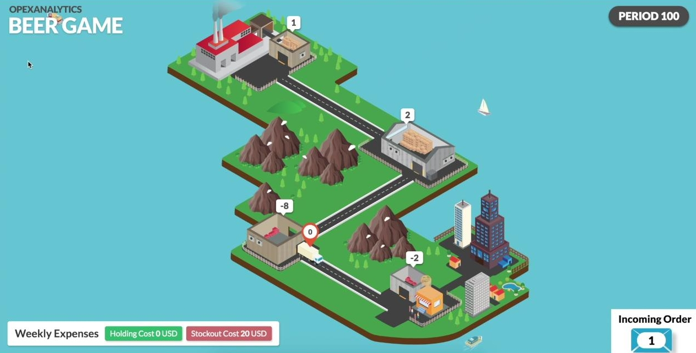
After 45000 of training episodes, it has learned almost the optimal policy, and plays in a way to not only keeps its inventory level and cost close to zero, but also plays in a way to minimize the total cost of the system. Apparently, whole network is more stable and the inventory levels are closer to zero than previous screenshots.
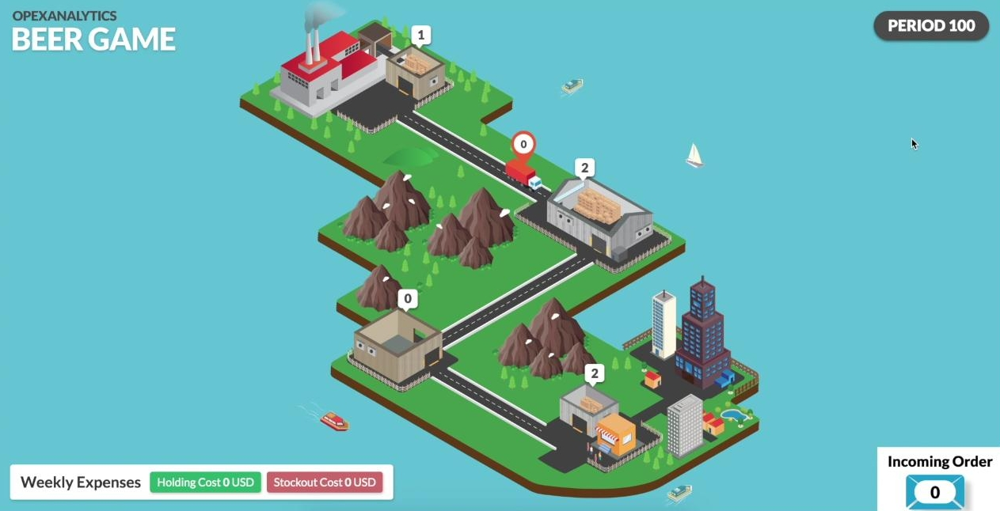
Numerical Results
Here we have the cumulative cost of four agents, when one of the agents follows DQN, and other agents playing base stock. In each figure, the upper subfigure provides the total cost, and the lower subfigure provides the normalized cost, in which the both BS policy and DQN costs are divided by BS policy's cost. It is worthy to mention that, for the proposed setting of game BS policy is optimal. As it you see, after few iterations all have learned to play close to optimal solution and continue it to end. The following figure represents the results of the case that DQN plays retailer: 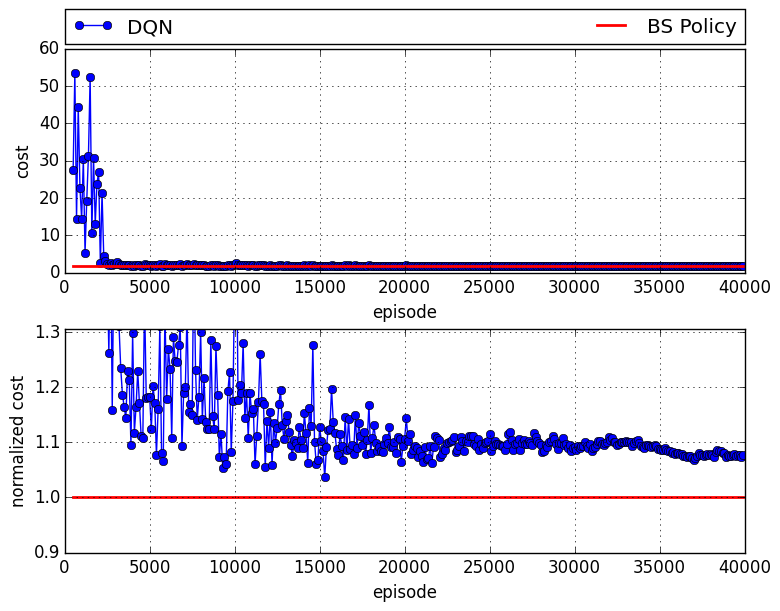 in which there is about 8% of gap compared to the case that all agents follow base stock policy. The following figure presents the results of the case that DQN plays wholesaler: 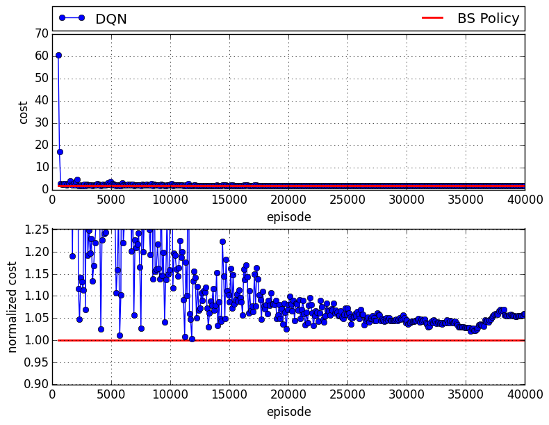 in which there is about 6% of gap compared to the case that all agents follow base stock policy. The following figure provides the results of the case that DQN plays distributor: 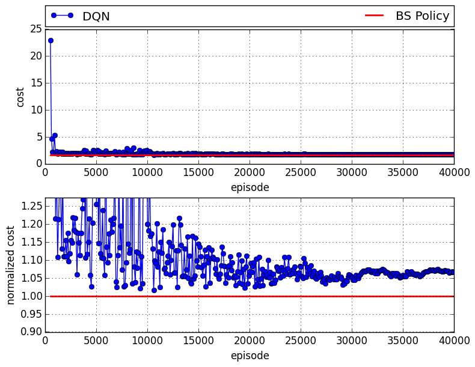 in which there is about 7% of gap compared to the case that all agents follow base stock policy. And finally, the following figure shows the results of the case that DQN plays manufacturer: 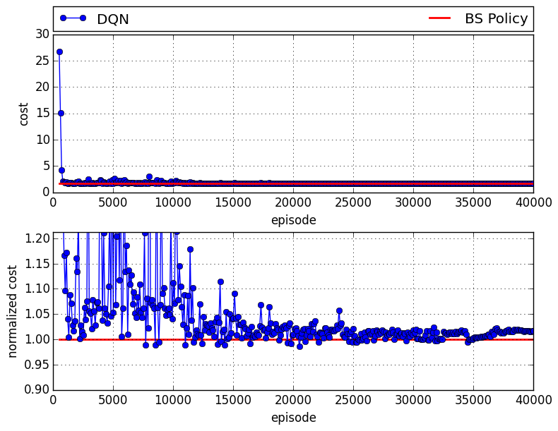 in which there is about 2% of gap compared to the case that all agents follow base stock policy. Also, the following figure shows the details of the inventory level (IL), on-order quantity (OO), order quantity (a), order up to level (OUTL), and reward (r) for the retailer when the retailer is played by the DQN. The BS policy and DQN have similar IL and OO trends, and as a result their rewards are also very close. 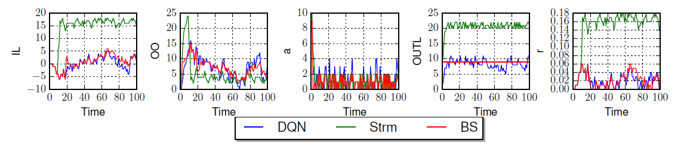
Play with Irrational Players
The agents who follow the BS are rational players. In order to see how well DQN works when it plays with irrational players, we tested the case that a DQN agent plays with three agents following the Sterman formula; see the following figure, which shows the corresponding results when the DQN plays the distributor. The DQN learns very well to play with other irrational players to minimize the total cost of the system, such that on average the DQN agents obtained $40\%$ smaller cost than the case in which the three Sterman players play with one BS policy. We get same results on other agents. 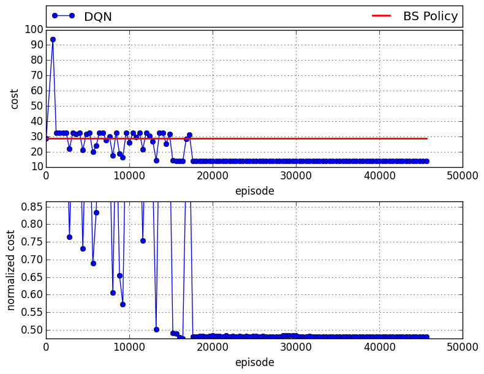
Transfer Learning
This procedure works well; however, for each new set of the number of actions, shortage and holding cost parameters we need to train a new policy, since they uniquely define the DQN loss function, and this is a time consuming procedure. To address this issue, we train a base agent with given cost parameters and action space, then transfer the acquired knowledge to the new agents, so that the obtained policy easily can be generalized to other agents. The following table shows the results of training new agents with different cost coefficients and different action spaces. As it is shown, the average gap is around 8.9\%, which shows the effectiveness of transfer learning approach. Additionally, the training times of each case are provided in the table. In order to get the base results, we did hyper-parameter tuning which resulted in total of 13,354,951 seconds training. However, following the transfer learning approach we do not need any hyper-parameter tuning, and on average we spent 891,117 seconds for training, which is 15 times faster. 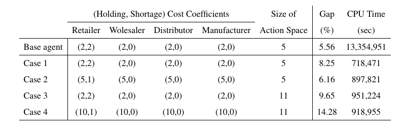
Conclusion
These results are really incredible!!!. We can learn to play close to optimal solution, with just---and only just---some historical data. Without any knowledge how other agents play, what is their ordering policy, etc. Nowadays that any company has huge datasets, we can easily use those data and optimize their supply chain network. This approach can be easily used in different supply chain with much more complex networks, and more agents. I will post more results latter. BTW, you also can read the corresponding paper here .!